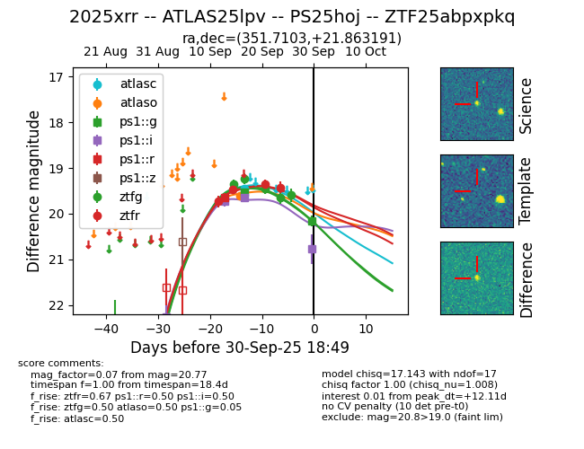
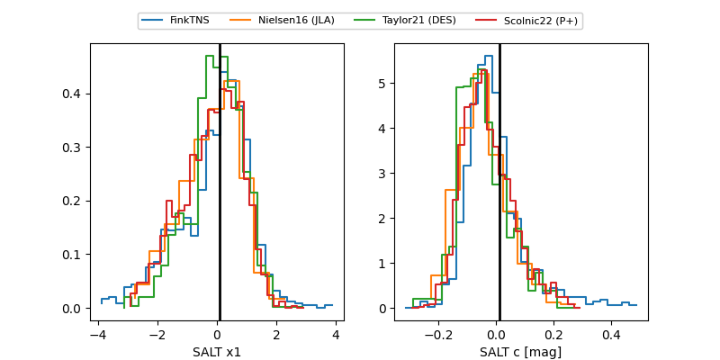

FINK: ZTF25abpxpkq
Lasair: ZTF25abpxpkq
ALeRCE: ZTF25abpxpkq
TNS: 2025xrr
YSE: 2025xrr
ZTF25abpxpkq (ztf,fink)
2025xrr (tns,yse)
ATLAS25lpv (atlas)
PS25hoj (panstarrs)
equatorial (ra, dec) = (351.7103,+21.86319)
galactic (l, b) = (98.1749,-36.90839)


last atlasc=19.45, atlaso=19.62, ps1::g=20.16, ps1::i=20.77, ps1::r=19.65, ztfg=19.60, ztfr=19.42
1 atlasc, 1 atlaso, 2 ps1::g, 3 ps1::i, 1 ps1::r, 5 ztfg, 4 ztfr detections